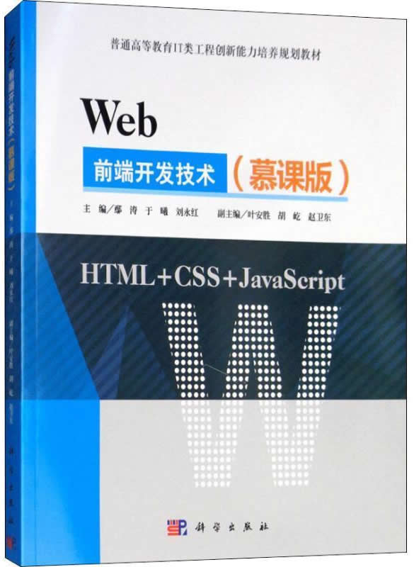

首页 > 书籍下载
《WEB前端开发技术（慕课版）》PDF下载（高清完整版）
|  | 作者：鄢涛、于曦、刘永红 |
| 出版时间：2018年10月01日 | |
| 出版社： 科学出版社 | |
| ISBN：9787030590879 | |
| 总页数：327 | |
| 总字数：51W |
《WEB前端开发技术（慕课版）》是写给 Web 前端开发人员的，它从基础的语法规则开始，采用逐步构建的学习方法，尤其适合初学者。
这里提供的是《WEB前端开发技术（慕课版）》的高清 PDF 下载，内容完整，附带目录标签。
这本书从初学者的角度去阐述知识点，以生动、系统地方式去总结核心开发技术，能够带给读者轻松、愉悦的学习体验。作为一名 Web 前端开发工作者，建议初学者可以在学习的过程中边看书边实践，相信你一定和我一样，每实现一个功能、完成一次交互或者做出一个效果，都会有大大地成就感！
下面是一位零基础读者对这本书的评价：
这本书内容不错，对于零基础的我来说没有太大压力，感觉收获很大，还要继续学习。
还有另外一位读者说：对我来说太有用了，又学到了很多新的知识点，这本书学起来很轻松，很容易理解。
书籍目录
- 第一部分 HTML
- 第1章 Web前端开发技术综述
- 第2章 HTML基础
- 第3章 文本和段落
- 第4章 列表
- 第5章 超链接
- 第6章 图像
- 第7章 表格
- 第8章 表单
- 第二部分 CSS
- 第9章 CSS基础
- 第10章 CSS的选择器
- 第11章 CSS的继承和层叠特性
- 第12章 CSS的基奉样式
- 第13章 字体样式
- 第14章 文本样式
- 第15章 背景样式
- 第16章 超链接样式
- 第11章 列表样式
- 第12章 表格样式
- 第19章 金子模型
- 第20章 浮动与定位
- 第21章 DIV+CSS布局设计
- 第三部分 3avaScript
- 第22章 JavaScript的筒介及用法
- 第23章 JavaScript的变量与数据类型
- 第24章 JavaScript对象
- 第25章 JavaScript函数
- 第26章 DOM和BOM
- 第27章 JavaScript事件
书籍下载
一键登录，免费下载完整版 PDF，文件名称：《WEB前端开发技术（慕课版）》.pdf